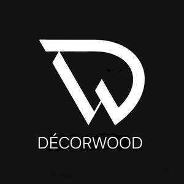
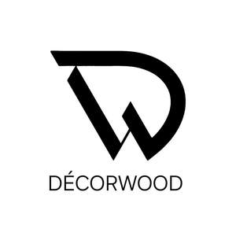
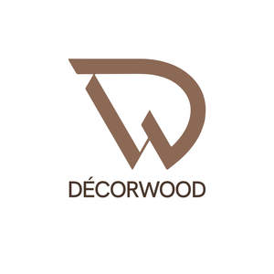

Trade Mark Journal No.2025/011 14 March 2025
UK00004168921 4 March 2025 (19)
Mark 1

Mark 2

Mark 3

- Class 19
- Boards of wood; Wood boards; Roofing boards [of wood]; Floor boards [of wood]; Floor boards of wood; Ceiling boards of wood; Hardwood boards; Softwood boards; Hardwood decking boards; Wooden decking boards; Timber particle boards; Timber laminated particle boards; Boards made of wood particles; Softwood decking boards; Wood; Wooden floor boards; Timber building boards; Building boards made from wood and waterproof resins; Plywood board; Laminated wood; Wood laminates; Wood fibreboard; Wood flooring; Wood paneling; Wood core plywood; Veneer wood; Wood veneer; Glue-laminated wood; Plastic building boards; Laminated boards (Non-metallic -) for walls; Wood veneers; Wood blocks; Boards (Wooden floor –); Wood veneer parquet flooring; Wood beams; Floor boards (Parquet -); Flooring made of wood; Wood chipboard; Floor boards (Non-metallic -); Wood tile flooring; Acoustic panels of wood for walls; Acoustic panels of wood for ceilings; Wood panelling; Chipboard panels; Facing panels of plywood; Glass panels; Non-metallic wall panels; Wall panels (Non-metallic -); Non-metal floor panels; Ceiling panels (Non-metallic -); Wall panels not of metal; Plywood; Plywood sheets; Plywood for building; Particleboard; Veneered chipboard; Scaffolding of wood; Wooden veneers; Laminated chipboard; Plastic wallboards; Particle board for use in building; Particle board for use in construction; Hardwood flooring; Laminate flooring; Flooring (Parquet -); Vinyl flooring; Flooring (Non-metallic -); Artificial wood flooring; Laminate flooring, not of metal; Flooring underlay made of cork; Ceramic tiles for floors; Rubber floor tiles; Glazed ceramic floor tiles; Wooden flooring; Floor tiles of wood; Veneer for floors.
Mohammad Jahangir Alam